Steward
分享是一種喜悅、更是一種幸福
繪圖相關 - CNC1610 Pro - 使用FlatCAM將Gerber轉成CNC G-Code
參考資料：
http://flatcam.org/manual/installation.html
https://github.com/benishor/cnc-test-pattern
https://bitbucket.org/jpcgt/flatcam/src/master/
Debian x64
$ cd $ git clone https://github.com/benishor/cnc-test-pattern $ cd $ git clone https://bitbucket.org/jpcgt/flatcam $ cd flatcam $ setup_ubuntu.sh $ ./flatcam
載入Gerber檔案
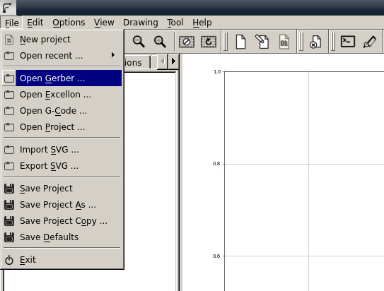
選擇PCB圖層
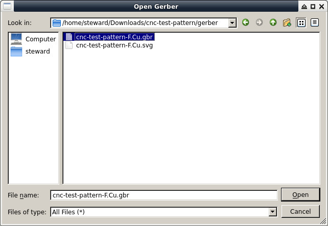
這個測試檔案，可以用來測試CNC機器是否可以刨出不同的線寬
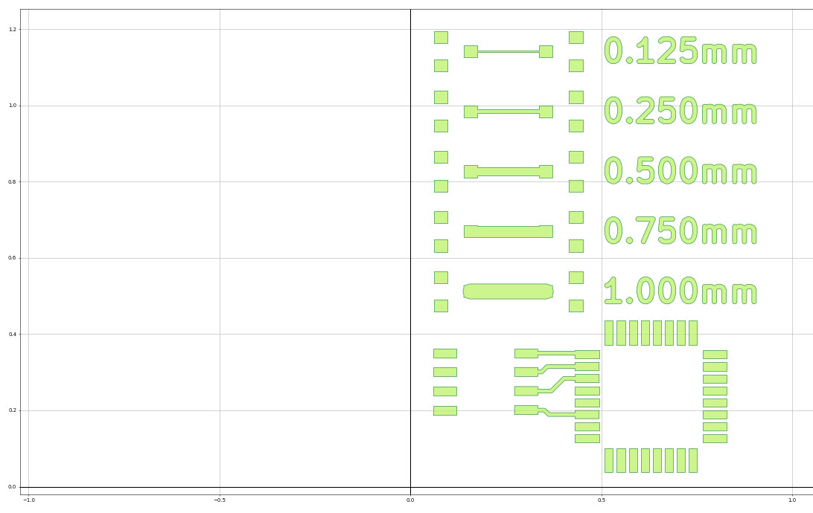
在Project頁面選擇剛剛載入的檔案
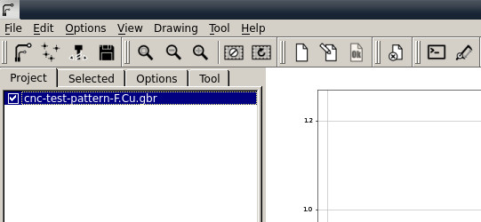
點選Selected頁面
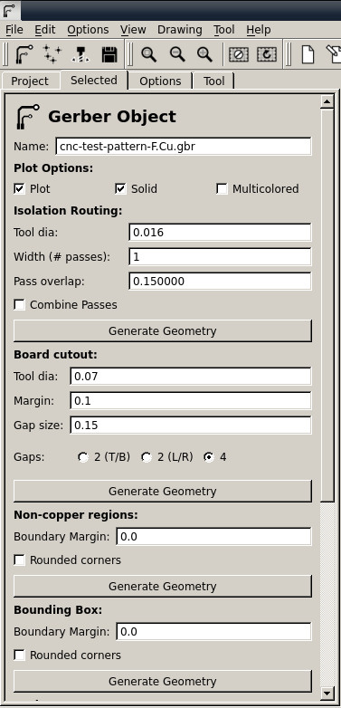
拉到最下面，選擇Offset auto，讓圖案對齊原點
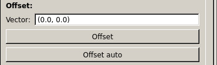
對齊後
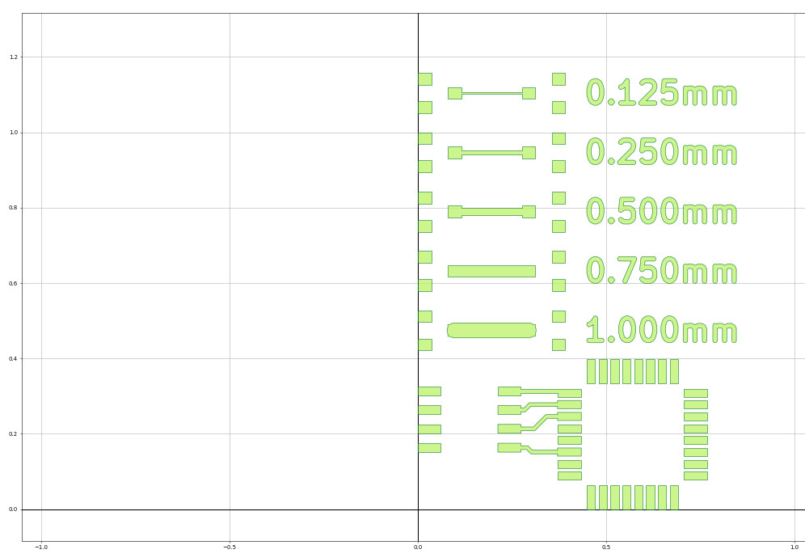
接著拉到最上方的Isolation Routing，這個是刨線設定，Tool dial是鑽針大小，越細的鑽針代表可以刨出更細小的線，當然線也更容易黏在一起(因為沒有刨斷)，確定後，按下Generate Geometry
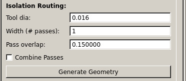
使用0.016鑽針設定的結果，紅色的線就是要刨的線，可以發現，使用這樣的鑽針設定是無法刨出TQFP腳位
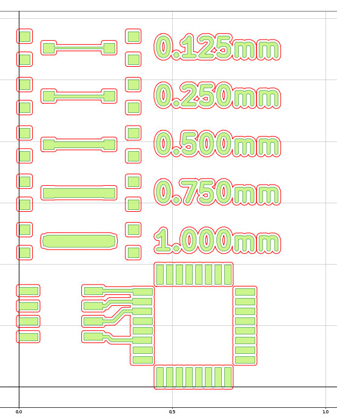
FlatCAM的每個步驟都會在Project長出一個檔案，如果要刪除，只要在Project頁面，用滑鼠選擇檔案，然後按下Delete圖示即可
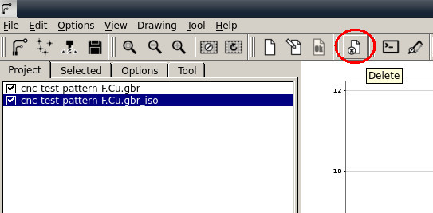
在Project頁面選擇gbr_iso檔案，接著切換到Selected頁面，Cur Z:代表刨刀的下刀深度(負號代表Z軸往下的意思)，下刀越深(如：-0.002)，越容易讓線有明顯的間隔，缺點就是刨不出太細的線，而下刀越淺(如：-0.0015)，雖然可以刨出比較細小的線，不過由於機台平整問題，還有PCB電路板的厚度差異以及翹邊問題，線也比較容易黏在一起(沒有刨斷)，Travel Z:代表抬刀的Z軸偏移(沒有在刨線時)，Spindle speed:代表刨刀的馬達轉速，接著按下Generate
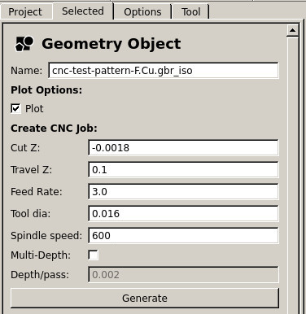
接著按下左下角的Export G-Code按紐
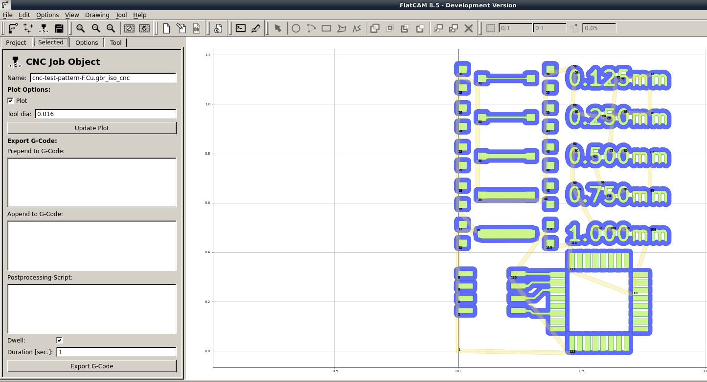
選擇要儲存的檔案位置
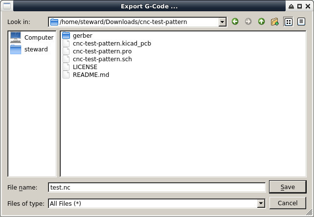
司徒習慣使用單機，因此，將MicroSD插入控制器
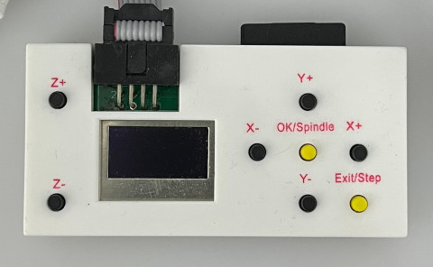
固定PCB
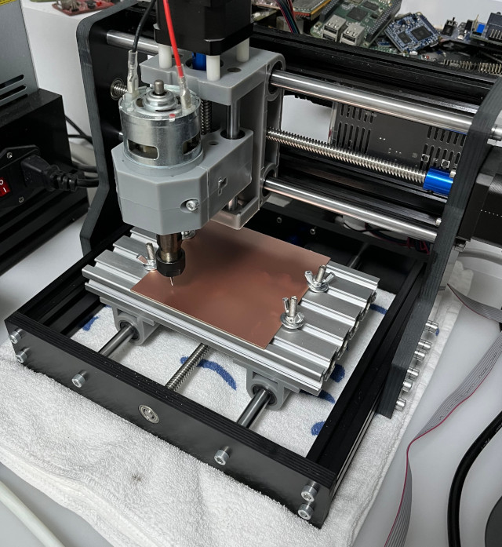
開啟電源
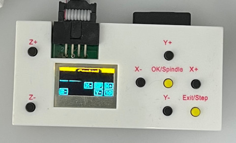
使用三用電錶設定Z軸偏移(原點)
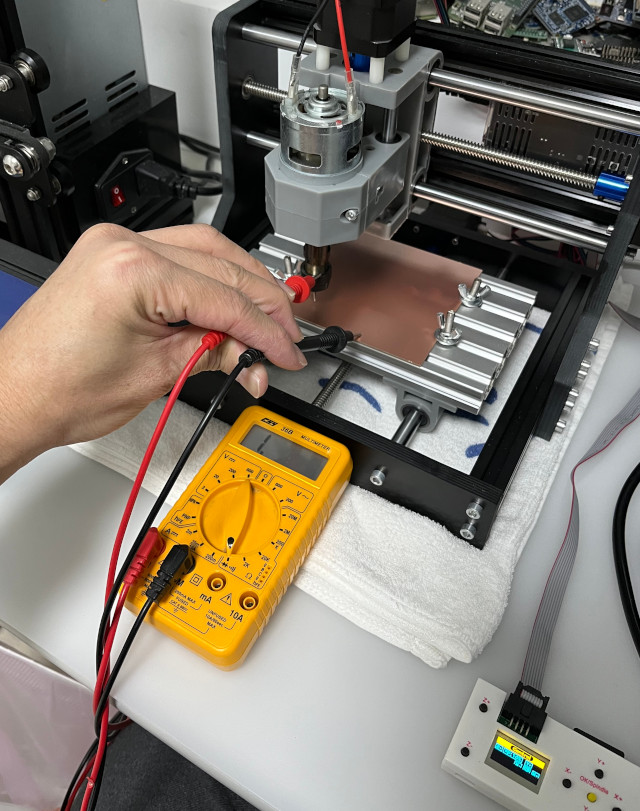
MicroSD插入後，選擇檔案
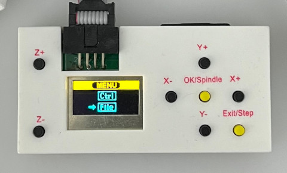
選擇剛剛儲存的檔案
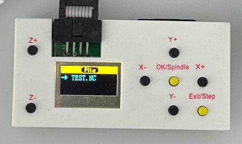
開始刨線
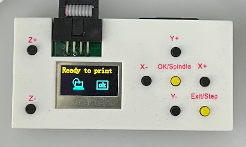
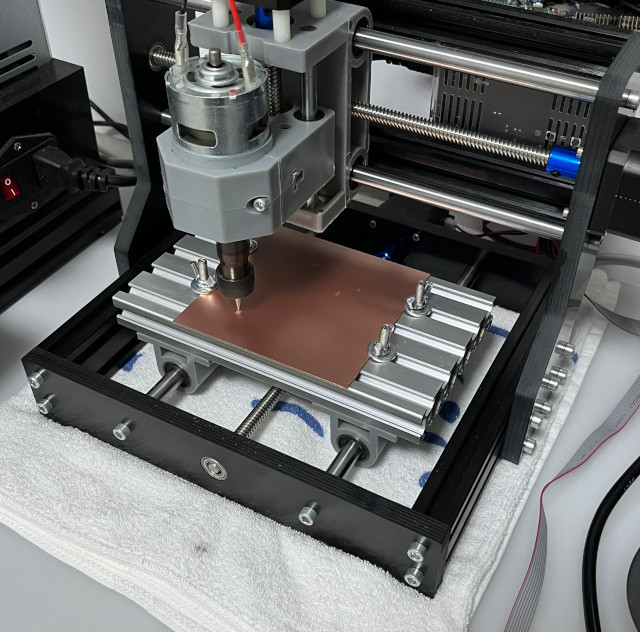
完成
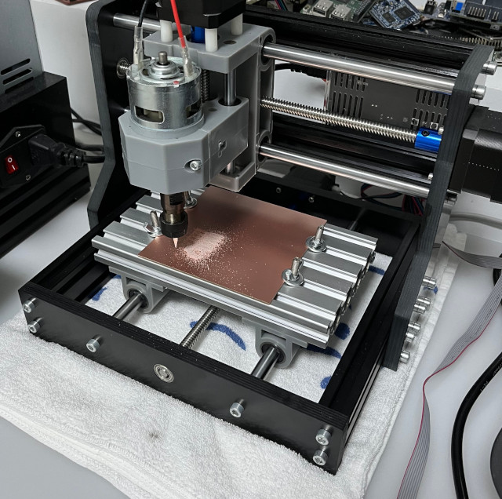
這片PCB比較薄一點，因此，很多線沒有割斷
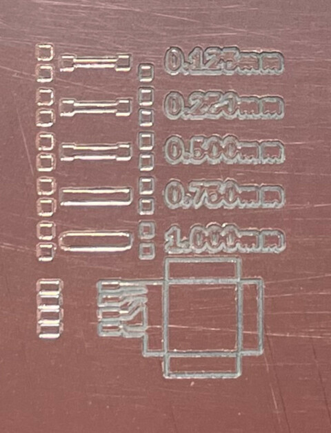
使用檯燈查看線路
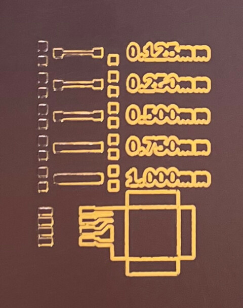
同樣的檔案，司徒使用另一片PCB重新刨線一次，發現這片PCB比較厚一點，所以可以割出比較完美的線路
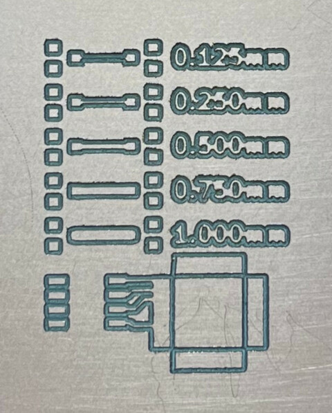
使用檯燈查看線路
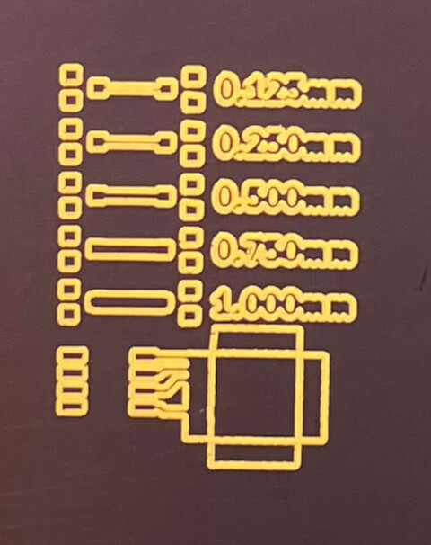